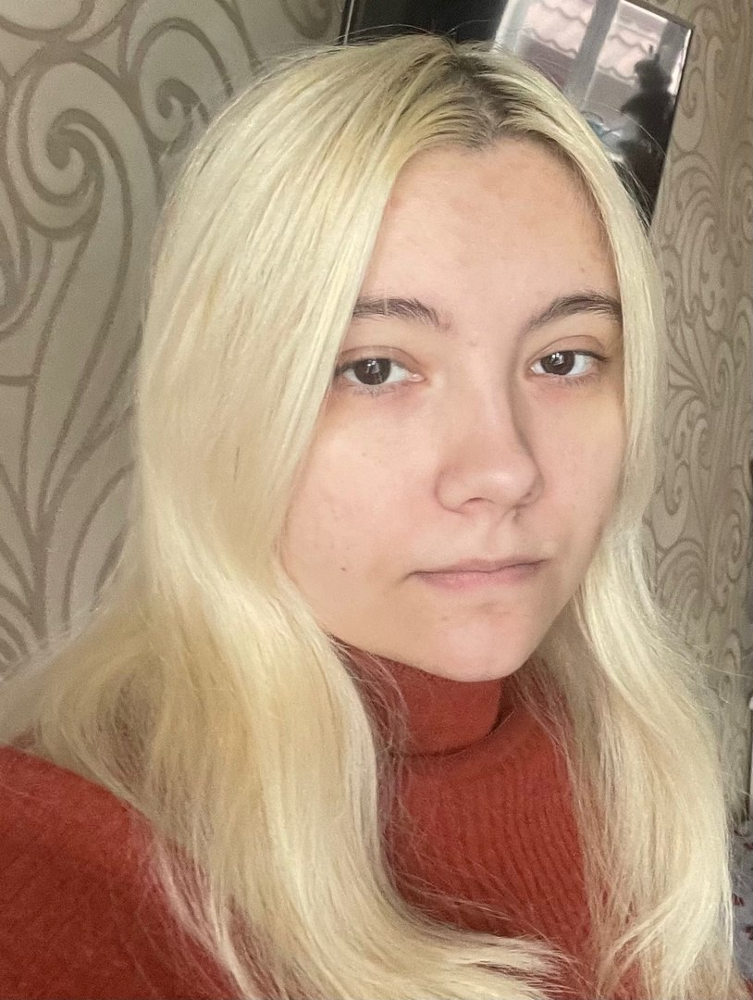

Факультет: Математики и компьютерных наук
Кафедра: Информационных технологий
Специальность: Прикладная математика и информатика (Магистратура)
Научный руководитель: доц. Полетайкин А.Н.

Родилась в городе Ижевск. В 2025 году окончил бакалавриат Кубанского государственного университета по направлению «КИТ». В настоящее время обучаюсь в магистратуре. Основные научные интересы связаны с компьютерным зрением и алгоритмами трехмерной реконструкции объектов по плоским изображениям.
«Разработка системы для реконструкции 3D-моделей по изображениям»
Мой интерес к информационным технологиям и современным цифровым инструментам постепенно сформировался ещё в период школьного обучения. Я училась в гимназии № 92 города Краснодара. За время учёбы стремилась не только получать хорошие оценки, но и углублённо изучать интересующие меня дисциплины, развивать аналитическое мышление и навыки самостоятельной работы.
Гимназию я окончила с отличием, получив аттестат с отличием (красный диплом) и медаль. Для меня этот результат стал подтверждением того, что систематическая работа, ответственность и заинтересованность в обучении позволяют достигать поставленных целей.
После окончания школы я поступила в Кубанский государственный университет на направление, связанное с прикладной математикой и информационными технологиями. Обучение в университете позволило мне получить фундаментальную подготовку в области математики, программирования и компьютерных наук, а также сформировать интерес к практическому применению вычислительных методов.
В период обучения я уделяла особое внимание программированию, обработке данных и алгоритмам. Постепенно мой профессиональный интерес сосредоточился на задачах машинного обучения, компьютерного зрения и работе с цифровыми изображениями.
После завершения бакалавриата я продолжила обучение в магистратуре Кубанского государственного университета. Одним из направлений моей дальнейшей профессиональной деятельности стала разработка программных решений, связанных с обработкой изображений и восстановлением трёхмерной информации.
Стремясь расширить полученные в университете знания, я прошла дополнительное обучение в Томском государственном университете по направлению «Машинное обучение». Это позволило мне углубить понимание методов анализа данных, принципов построения моделей машинного обучения и особенностей их практического применения.
В рамках дополнительного обучения я также прошла стажировку, связанную с анализом базы данных компьютерных комплектующих. Во время этой работы я получила практический опыт взаимодействия с наборами данных, их изучения и анализа. Этот опыт помог лучше понять, как методы обработки информации и программные инструменты могут применяться для решения прикладных задач.
Стажировка стала важным этапом моего профессионального развития, поскольку позволила дополнить теоретическую подготовку практическими навыками работы с данными и приблизиться к реальным задачам, возникающим при разработке информационных систем.
Основным языком программирования, с которым я работаю, является Python. Я использую его для решения задач обработки информации, анализа данных и разработки моделей машинного обучения. В работе применяю библиотеки и инструменты экосистемы Python, предназначенные для анализа данных, математических вычислений и построения моделей машинного обучения.
Отдельное место в моих профессиональных интересах занимает компьютерная графика и трёхмерное моделирование. Я работаю в Blender, создаю трёхмерные модели объектов и занимаюсь их анимацией. Такой опыт позволяет мне сочетать программирование, математические методы и визуальное представление результатов.
Мне интересно направление, объединяющее компьютерное зрение и трёхмерную графику. В частности, меня привлекают задачи восстановления пространственной структуры объектов по цифровым изображениям, построения трёхмерных моделей и автоматизации отдельных этапов этого процесса.
Тема моей магистерской диссертации связана с разработкой системы для реконструкции 3D-моделей по изображениям. В рамках этой работы рассматриваются методы компьютерного зрения, алгоритмы выделения и сопоставления признаков, а также подходы к построению трёхмерного представления объектов на основе фотографий.
Для меня данная тема представляет интерес не только с научной, но и с практической точки зрения. Технологии трёхмерной реконструкции могут использоваться в компьютерной графике, виртуальной и дополненной реальности, проектировании и других областях, где необходимо получать пространственные модели реальных объектов.
В дальнейшем я планирую продолжать развиваться в области машинного обучения, компьютерного зрения и трёхмерного моделирования, совершенствовать навыки разработки программных систем и изучать современные алгоритмы обработки визуальной информации.
Сочетание математической подготовки, опыта программирования, дополнительного обучения машинному обучению и практической работы с трёхмерной графикой формирует основу моего дальнейшего профессионального развития.